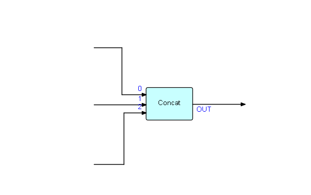

"Concat" Component
I am still trying to articulate the practical and theoretical differences between "classical" Flow-Based Programming (FBP), on the one hand, and NoFlo and the various FBP-inspired, synchronous, systems, on the other. An attempt can be found at FBP vs. FBP-inspired Systems.
The FBP paradigm and application development philosophy has been gathering steam over the last 50 years, and over the last few years a number of products have appeared, often described by their authors as being implementations of FBP, but usually lacking key characteristics of "classical" FBP, such as selective receive from multiple input ports and "back pressure". What is more serious, from my point of view, is that, if one of these products is a person's first exposure to FBP, this may get in the way of their adapting to the all-important FBP "paradigm shift". And on the surface the differences can be quite subtle - the "FBP-inspired" products do share some characteristics with "classical" FBP (component orientation, configurable modularity), but most of them miss the essence, which is that FBP is a paradigm change from the standard, traditional von Neumann paradigm to a much more "engineering style", component-oriented paradigm. This can be very confusing to people coming to FBP without adequate preparation (reading the book, building simple applications using one of the FBP implementations, etc.)
The FBP-like product that has gained a lot of attention to FBP was NoFlo, built using JavaScript and Node.js, but paradoxically NoFlo is one of the products that does not implement "classical" FBP, and therefore does not support the "real FBP" paradigm change, with all the productivity and maintainability gains that this provides. And more recently, Node-RED, which has basically the same problem. Their mental model is very different from that of "classical" FBP, and only really provides a subset of the benefits of the latter, exciting though they may be to someone running into FBP concepts for the first time.
"Classical" FBP (in what follows I will usually just say "FBP") is an "industrial" processing model, and actually has more in common with the old Unit Record technology, which was the way most data processing was done until about the late '60s, when the von Neumann machine started to take over. The von Neumann paradigm nowadays has programmers so brain-washed that they cannot conceive of a different way of doing data processing - yet FBP has many advantages over the von Neumann paradigm (the latter is still used within FBP components, so you don't have to give up on it all together!). When computers started to take over the field, we lost a number of subtle advantages of Unit Record, which weren't really appreciated at that time.
Bottom line: FBP applications are not von Neumann systems (although individual components are); they are more like factory assembly lines - i.e. a totally different paradigm!
I haven't really found a way to coax people to make the necessary paradigm shift - while at the same time sparing them the painful (?) task of reading at least the first 1/2 of my book ("Flow-Based Programming", 2nd ed.), so I thought I would try talking about a single component which seems to me to highlight a number of the differences.
I have chosen the FBP standard Concatenate component, as it is a simple general purpose FBP component with no parameters. Its function is to force two or more streams of data into a fixed sequence (one after another), usually for human consumption. An example of its use might be to produce a summary page from data coming from different (asynchronously running) areas of an FBP network - e.g. number of transactions might be generated by one part of the network, number of affected customers by another, and total run time by another... Let us then stipulate that they always have to be displayed in the same sequence, independent of when they were generated. I said "for human consumption" because humans usually like things to be displayed in a fixed sequence, even though machines don't care!
Schematically:

Concatenate is an example of a parameter-less FBP component. Its logic is essentially (in pseudocode):
set variable "c" to array size for array input port
initialize "i" to 0
do while "i" < "c"
receive all IPs from array input port element "i" until end of stream,
emitting each one to the (single) output port
increment "i"
enddo
With small amounts of data, the lack of back pressure in most FBP-inspired products probably doesn't hurt, but in an actual real-world situation you could easily accumulate a few billion IPs waiting at element 2, which cannot be processed until end of stream is detected at element 0 and at element 1. In "classical" FBP, you don't "receive" any of them until you are ready to process them. This works fine because, as well as selective receive, FBP has "back pressure", meaning that a sending process is suspended if the connection involved is full, so the processes generating the "element 2" data will just wait, without any special coding required on the part of the programmer.
Here is Concatenate in JSFBP (https://github.com/jpaulm/jsfbp ):
'use strict';
module.exports = function concat() {
var array = this.openInputPortArray('IN');
var outport = this.openOutputPort('OUT');
var ip = null;
for (var i = 0; i < array.length; i++) {
while (true) {
ip = array[i].receive();
if (ip === null) {
break;
}
outport.send(ip);
}
}
};
I could show this component in the other "classical" FBP languages with FBP implementations in the https://github.com/jpaulm repos (Java, C#, C++ with Boost), but they all have essentially the same structure, because, under the covers, these implementations all support multiple cores (this doesn't affect the code, and is transparent to coders).
Now, I will show the corresponding component in NoFlo: GitHub site, courtesy of Henri Bergius.
const noflo = require('noflo');
exports.getComponent = () => {
const c = new noflo.Component();
c.description = 'Gathers data from all incoming connections and sends them together in order of connection';
c.inPorts.add('in', {
datatype: 'all',
addressable: true,
});
c.outPorts.add('out',
{ datatype: 'all' });
return c.process((input, output) => {
const indexesWithStreams = input.attached('in').filter((idx) => input.hasStream(['in', idx]));
if (indexesWithStreams.length !== input.attached('in').length) { return; }
indexesWithStreams.forEach((idx) => {
const stream = input.getStream(['in', idx]);
stream.forEach((packet) => {
output.send({
out: {
...packet,
index: idx,
},
});
});
});
output.done();
});
};
As stated above, in this implementation, streams other than the first will build up in storage until the component is ready to output them - this can of course happen even before `concat` starts to output the first stream. Henri Bergius says they have plans to add "back pressure" - I am curious how they plan to do this, as it would seem to require significant changes in NoFlo's architecture.
Tom Robinson recently posted an implementation of Concat using async/await, which is included in ES2017 and supported natively in node.js and most browsers, as part of his Streampunk project. This does seem closer to the spirit of classical FBP. As far as I know, however, Javascript still can't support multiple cores, which would seem to be a significant limitation if one wants to use JavaScript on the server side...